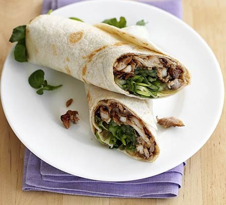

Oscar's Hoisin Chicken Wraps

Description
The Hoisin Chicken Wrap is my personal favourite. The fantastic
thing about this recipe is that it is so open to interpretation-
once the basis of the wrap is formed, anything you like can go in
as well. It is a relatively new recipe, made popular by gourmet
chicken shops.
Ingredients (feeds 4)
- White wraps x 8
- A head of lettuce
- Chicken breast 500g
- Hoisin sauce (350ml)
- Mature Cheddar (200g)
- Oregano or similar herbs
- Grill seasoning (optional but recommended)
- Any other extras- rice, roasted peppers, chorizo, halloumi, and fluffy potatoes all work well
Steps
- Firstly, dice the raw chicken into medium
sized fillets. If you are using boned chicken,
make sure to debone. Do not cross contaminate
and make sure to keep washing your hands and objects
touched by raw chicken. Leave the chicken to grill
on gas mark 6 for 10 minutes, making sure to flip it over
5 minutes through.
- Whilst the chicken is cooking, prepare the wraps.
Peel strips of lettuce from the head and place three
each into each wrap. Cut three long slices of Cheddar
for each wrap and place inside.
- Season each side of the chicken whilst flipping
it, with a heavy sprinkling of oregano or whatever herbs
you have to hand, and grill seasoning.
- Once the chicken is thoroughly cooked, pour
the hoisin sauce into the frying pan and mix with
the chicken. Make sure to just coat it thickly,
not to drown the chicken in hoisin so the wraps
don't get damp.
- Any extras would be put in the wraps now.
I reccommend any of the optional ingredients
stated above, especially halloumi or peppers. Your
wraps should now be complete.